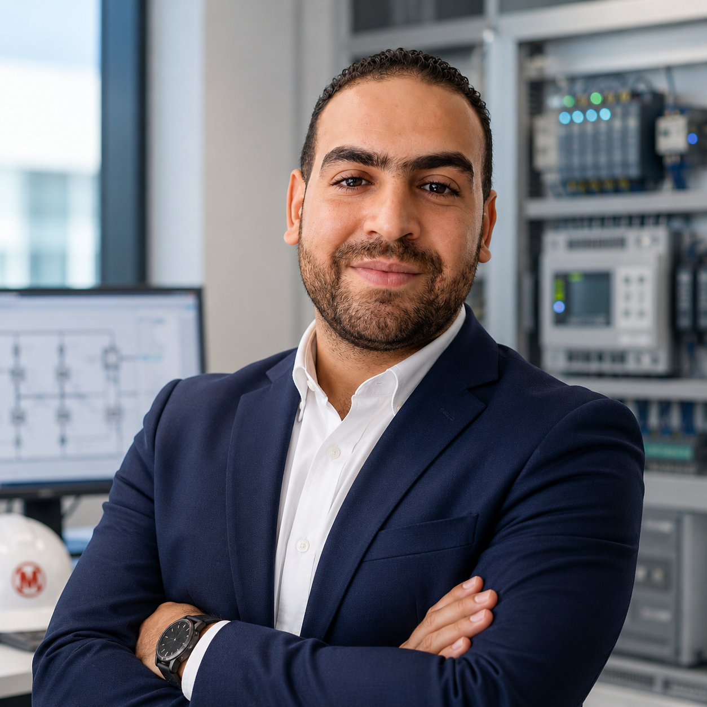

Doctor J
A wheeled robot built to help fight COVID-19 by letting patients and doctors communicate without contact.
Robotics · Electronics · Team project
Controls & Automation Engineer based in Ariana, Tunisia. I program PLCs and robots and I commission machines on customer sites around the world.

I am an automation engineer at Mondragon Assembly Group, where I program, commission and support automated assembly machines for customers in several countries. Before that I worked in manufacturing plants on electrical systems and automation.
I like the moment when a machine that was only drawings and code starts to produce good parts. I am also building my skills in robotics with ROS 2 in my own time.
A wheeled robot built to help fight COVID-19 by letting patients and doctors communicate without contact.
Robotics · Electronics · Team project
An automated system that weighs, labels and packs products, completed during my final-year internship at Poulina Group.
Siemens S7-1200 · TIA Portal · SolidWorks
A simulated drone for field monitoring. I am learning to build its software stack in simulation before any hardware.
ROS 2 · Gazebo · GPS
PLC programming and commissioning of automated assembly machines with Beckhoff TwinCAT 3 and field support for customers abroad.
Automation and controls work in a production environment.
Automation and controls work in a production environment.
Final-year internship: automated weighing, labeling and packaging system.
Engineering degree: Université Libre de Tunis (ULT) 2017 to 2020.
Beckhoff TwinCAT 3: 12 training modules, 2024.
English: EF SET C1, 2024.